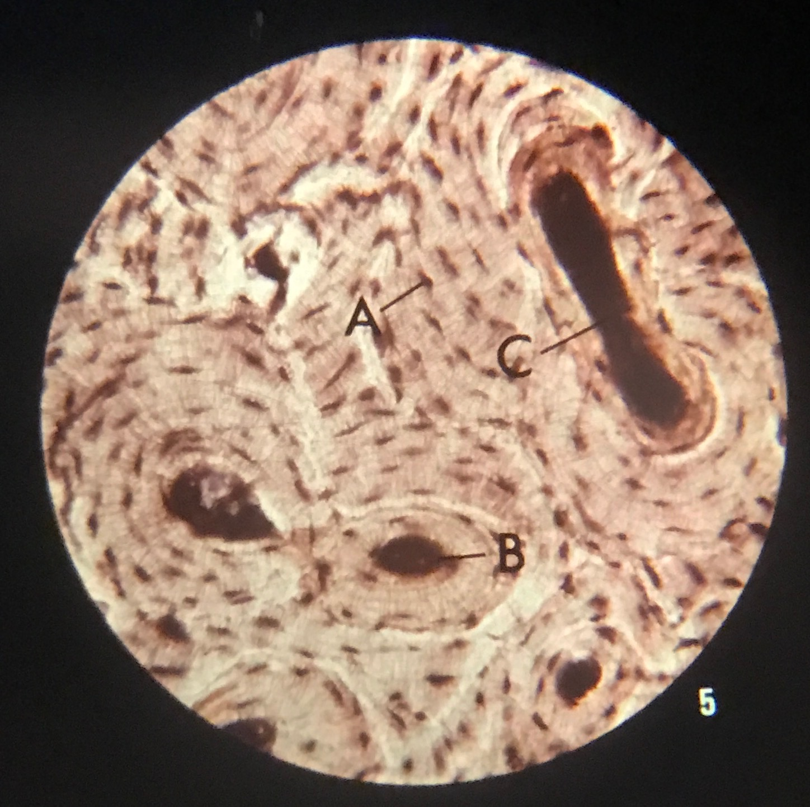

| Analysis | Picture |
|
A thin slice of bone, cut across, was used in the preparation of this slide. The small, dark, irregular-shaped spots scattered throughout the area, are the bone cells (A). Their nuclei are not visible at this magnification. Moreover, these bone cells are connected to each other by fine canals. The dark, large oval spot (B) is a canal containing nerves and blood vessels which bring nourishment and oxygen to the bone cells. IN preparing this specimen, the knife cut one of these canals on a tangent (C). |
 |